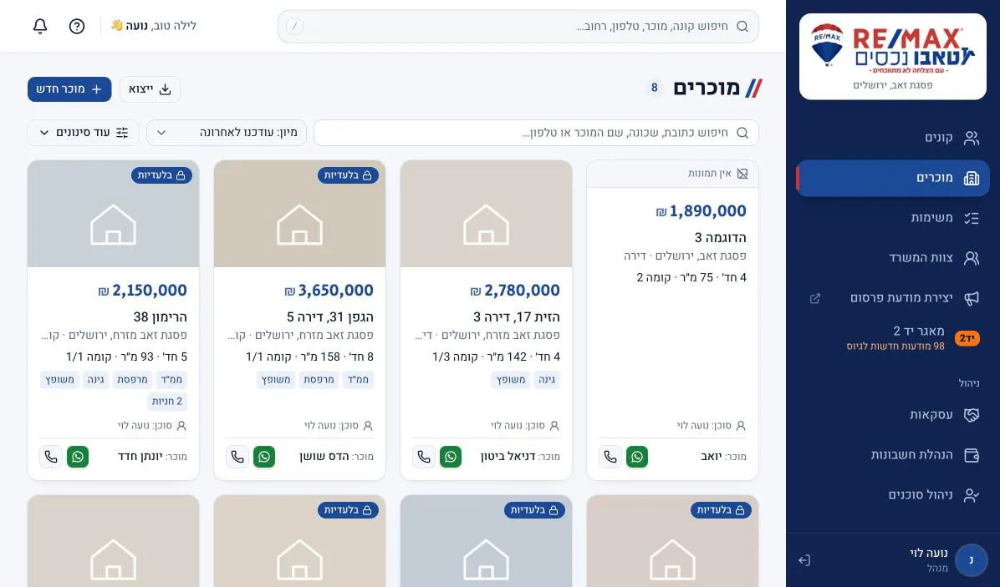
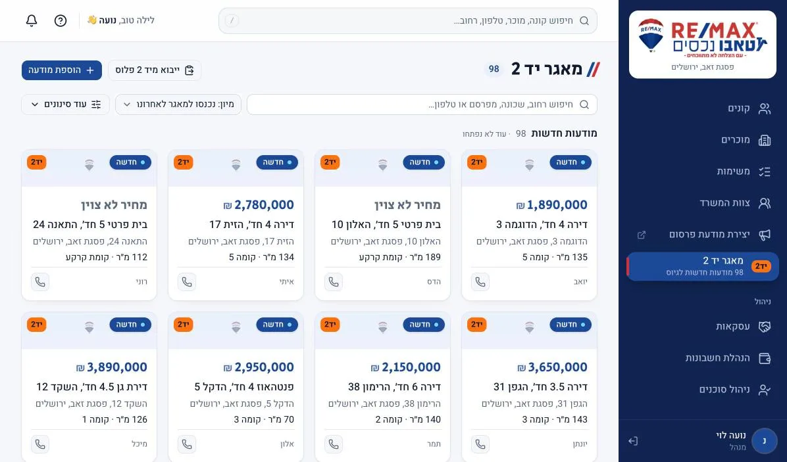
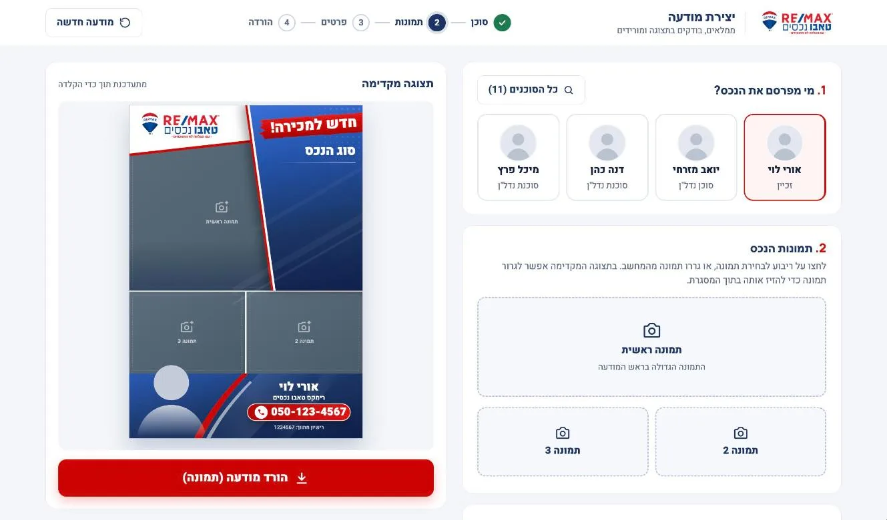

RE/MAX Office Systemsמערכות למשרד RE/MAX
Two systems for a real-estate office, built on my own after mapping the office’s workflows with its manager: an office platform for buyers, sellers, tasks and budget, and an ad generator for its 10 agents.
שתי מערכות למשרד תיווך, שבניתי לבד אחרי שמיפיתי עם מנהלת המשרד את תהליכי העבודה: פלטפורמה לניהול קונים, מוכרים, משימות ותקציב, ומחולל מודעות ל-10 הסוכנים.
- Clientלקוח
- RE/MAX real-estate officeמשרד תיווך RE/MAX
- My roleהתפקיד שלי
- Process mapping, design, development, trainingמיפוי תהליכים, עיצוב, פיתוח והדרכה
- Usersמשתמשים
- 10 agents + office manager10 סוכנים ומנהלת המשרד
- Statusסטטוס
- Internal system, in daily useמערכת פנימית בשימוש שוטף

The challengeהאתגרNo single place for the office’s pipelineאין מקום אחד לכל העבודה של המשרד
A real-estate office runs on relationships: buyers looking for the right property, sellers waiting for the right buyer, and follow-ups that cannot slip. Each agent tracked their own clients, the office manager had no shared view of the pipeline, and every listing ad was designed by hand.
משרד תיווך חי מקשרים: קונים שמחפשים את הנכס הנכון, מוכרים שמחכים לקונה הנכון, ומעקבים שאסור לפספס. כל סוכן ניהל את הלקוחות שלו בעצמו, למנהלת המשרד לא הייתה תמונה משותפת של העבודה, וכל מודעה לנכס עוצבה ידנית.
Before writing any code, I sat with the office manager and mapped how the office actually works: who owns which client, what each agent may see, which dates matter (exclusivity, eviction), and where new listings come from.
לפני ששורת קוד נכתבה, ישבתי עם מנהלת המשרד ומיפינו איך המשרד באמת עובד: למי שייך כל לקוח, מה כל סוכן רשאי לראות, אילו תאריכים קריטיים (בלעדיות, פינוי) ומאיפה מגיעים נכסים חדשים.
What I builtמה בניתיAn office platform and an ad generatorפלטפורמה למשרד ומחולל מודעות
Buyer & seller CRMCRM לקונים ולמוכרים
Each agent sees and edits only their own clients; the manager sees everything. Permissions are enforced in the database (row-level security), not just hidden in the UI.
כל סוכן רואה ועורך רק את הלקוחות שלו, והמנהלת רואה הכול. ההרשאות נאכפות במסד הנתונים עצמו (Row-Level Security), לא רק מוסתרות בממשק.
Buyer–property matchingהתאמת נכסים לקונים
Agents match buyers against all of the office’s listings without exposing another agent’s seller details.
סוכנים מתאימים לקונים נכסים מכל המשרד, בלי לחשוף פרטי מוכרים של סוכנים אחרים.
Automatic Yad2 listings poolמאגר יד 2 אוטומטי
New listings arrive from Yad2 alert emails through a Gmail script and an edge function, filtered to the office’s area and de-duplicated.
מודעות חדשות נקלטות אוטומטית ממיילי ההתראה של יד 2 דרך סקריפט Gmail ופונקציית Edge, מסוננות לאזור המשרד וללא כפילויות.
Tasks and a daily digestמשימות ותזכורת יומית
Tasks sync to each agent’s phone calendar. Every morning at 08:00 the system flags ending exclusivities, eviction dates and overdue tasks.
משימות מסונכרנות ליומן בטלפון של כל סוכן. כל בוקר ב-08:00 המערכת מתריעה על בלעדיות שמסתיימת, תאריכי פינוי ומשימות באיחור.
Deals & budget dashboardדשבורד עסקאות ותקציב
The manager records closed deals and commissions and follows income and expenses month by month.
המנהלת רושמת עסקאות סגורות ועמלות, ועוקבת אחרי הכנסות והוצאות חודש אחרי חודש.
Ad generator for agentsמחולל מודעות לסוכנים
Pick an agent, add photos and details, and download a branded ad ready to post. It opens pre-filled from a property card in the CRM.
בוחרים סוכן, מוסיפים תמונות ופרטים ומורידים מודעה ממותגת מוכנה לפרסום. אפשר לפתוח אותה ממולאת מראש מתוך כרטיס נכס ב-CRM.
ScreensמסכיםInside the systemsמבפנים


OutcomeתוצאהIn daily work at the officeחלק מהעבודה השוטפת במשרד
Both systems are in production. I trained the agents in person, and the office now manages buyers, sellers, tasks and ads in one place.
שתי המערכות בפרודקשן. הדרכתי את הסוכנים באופן אישי, והמשרד מנהל היום קונים, מוכרים, משימות ומודעות במקום אחד.
- Used by the office’s 10 agents and its managerבשימוש 10 סוכני המשרד והמנהלת
- New Yad2 listings flow in without manual copyingמודעות יד 2 חדשות נכנסות בלי העתקה ידנית
- Listing ads go from a form to a finished image in minutesמודעה לנכס עוברת מטופס לתמונה מוכנה תוך דקות